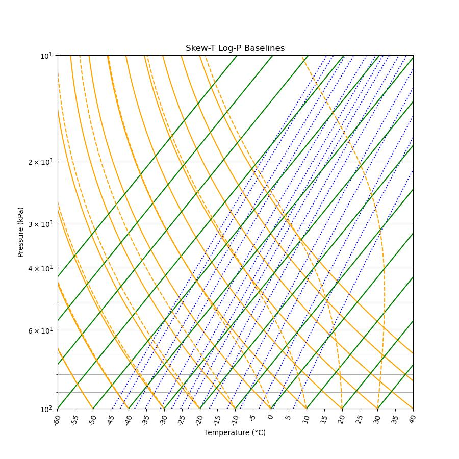

Skew-T log-p
The Skew-T Log-p diagram, like the emagram, has the temperature as the abscissa and the logarithm of the pressure as the ordinate, used as a proxy for elevation. All the baselines in a skew-T digragram are skewed by a factor, e.g. 35°C. A radiosonde plotted on a skew-T diagrams must also be skewed. One striking difference between an emagram and a skew-T diagram is that the isotherms are diagonal lines tilting upward to the right. The skew factor is chosen to make the isotherms almost orthogonal to the dry adiabats.
